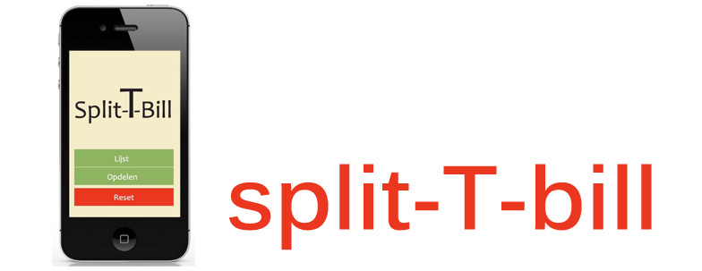

split-T-bill

Vereenvoudigd het betalen!
Split-T-bill is een project dat ik voor het vak Mobiele Platformen heb gemaakt. Het is een app die het eenvoudiger maakt om de rekening op café te kunnen delen. Er zijn 2 verschillende methodes.
De eerste methode is het splitsen van de rekening in gelijke delen. De gebruiker kan de prijs en het aantal personen ingeven. Deze berekent dan automatisch hoeveel iedereen moet betalen ongeacht hetgeen wat ze gedronken hebben.
De tweede methode is het nauwkeurig bijhouden wie wat gedronken heeft. De gebruiker voegt eerst de namen toe van de aanwezigen en daarna de drankjes met de prijs. De prijzen worden opgeteld en zo ziet iedereen wat hij gedronken heeft en hoeveel hij precies moet betalen.
Dit is een eerste versie. Ik hoop dit volgend jaar als eindwerk te kunnen uitwerken. Eventueel via Foursquare de adressen koppelen aan een databank zodat je de prijzen automatisch kan opvragen. Dit project kwam tot stand met PHP en Javascript